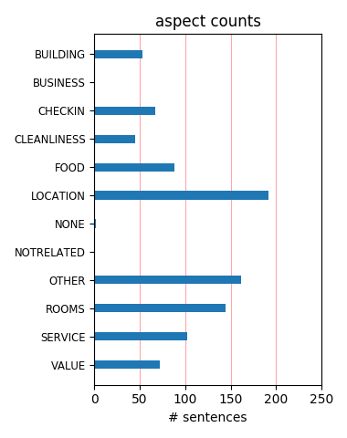
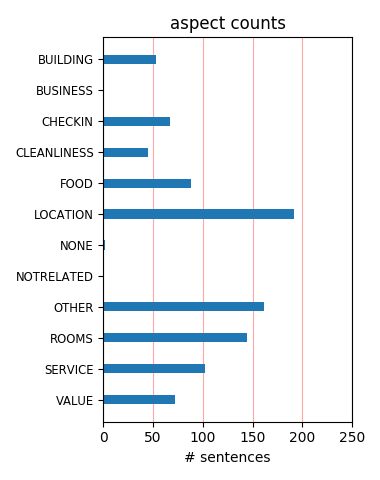

Great hotel with a great location. Free fresh baked warm cookies and milk every night! Coffee, tea, and hot chocolate in the morning. Close to local fresh food market on Saturday's. Short walk to pier 39 and rail cars. I would definatley stay here again.
If you are a road warrior you will love this hotel. It is a complete departure from the ordinary to the luxurious. Perfect location, a wonderful staff, and an incredible Japanese Restaurant downstairs. DO NOT miss the 9pm cookies and milk!! I will definitely be back.
Nice location a block from the Ferry building. Near the financial district, so it's quiet in the evening. Nice room with comfortable queen bed. Well appointed good sized bathroom. Friendly staff and a big lobby that's pretty nice. Saw a couple playing some Wii bowling there.
I searched and searched for hotels and came across this Harbor Court thanks to previous travelers and reviews on Tripadvisor. I can tell you they didn't let me down! My husband and I were only there for one night but we enjoyed our stay greatly! I give this hotel a strong A!
The view rooms here are amazing. Request a high floor, looking out, all you'll see is water. Gives you that cruise ship effect. Rooms here are small but nice and comfortable. Also like most Kimpton hotels, it hosts a wine hour, in which they serve wine and beer complimentary.
the nicest thing that I can say about this hotel is that it is located next to a great restraunt, Perrys. The service at the front desk was so rude to us when we checked in this hotel made me happy that we were only staying one night. I do like though how they have Aveda in the room though.
The location is superb, make sure you ask for a room facing the bridge. Loved the dressing gowns. Kevin who checked us in was great and the free drinks between 5-6 pm in the lounge area was another bonus. Trams along to Pier 39 are picked up just around the corner and the city centre is within easy walking distance. Just perfect for us.
The hotel was nice with a friendly and helpful staff. Our room had a view of the Bay Bridge. The room was a little small but had enough room for two of us to move around. They have a nice wine and beer happy hour in the evenings. It was close to the Ferry Building. Which has a fun Saturday and Tuesday Farmers Market. Would stay there again when in SF.
the good news is my room is very quiet. the bad news is that i face a wall about 5 feet away from my window and the wall goes up another 1-2 stories, so give up if you are in the 4th or 5th floor. room is clean and very small. no coffee maker in room and only cold breakfast. ymca is suppose to be great but i have not tried it yet and i am sure it will be crowded.
TINY room. Decent location ONLY if you want to be near the Ferry Building. But if you want to be in a fun/active part of town at night this ain't the place. The staff were unfriendly; they couldn't be bothered to smile or say "good morning" or "good evening" at any time during our almost 1-week stay. They were also unhelpful; no good suggestions or advice was offered at any time.
nice bay location excellent room view of the bay/bridge walking distance to embarcadero shopping & ferry short distance to Giants Stadium & Fishermans Warf - walk/jog/train/street car nightly wine reception / cookies & milk / daily morning coffe free 10-15 body massage on some nights for singles/couples only due to room/bedding size excellent japanese sushi place adjacent to hotel
I spent a night in this hotel and was very happy with it, the service is very professional, the rooms are nice and clean, wifi is for free if you become a member of the club, fireplace in the lobby is cozy, the room had a very modern feel to it with a great view of the Bay Bridge. We got a promotion, so they greeted us with a free champagne in the room. I'd definitely stay here again.
I stayed at the Harbor Court for business earlier this month. The hotel is directly across the Embarcadero and my room had a incredible view of the Bay Bridge. The rooms were a little small, but cozy and well-designed. The restaurant next door, Ozumo is said to be one of the best in the city for Japanese dining and there are several other good restaurants in the area. I would stay here again!
This is well located for walking to AT&T Park and our room had an outstanding view of the Bay Bridge, the bay and the Embarcadero. Service was very good from the manager to the front desk to the maid. The room was rather plain, but the lobby is an alternative spot to relax (and drink free sangria in the late afternoon). All in all, very satisfactory and we would not hesitate to stay there again.
I have stayed at the Harbor Court Hotel for business and leisure and each time it has been a fantastic experience. The location is great for my business, surrounded by wonderful restaurants, a nice walk to the wharf and BART is only a few blocks away. The evening happy hours are enjoyable as well as the coffee in the morning. I recommend this boutique hotel - especially the rooms with an ocean view.
The location is great with views of the Oakland Bridge [which has lights at night], good restaurants within walking distance, and buses and ferry nearby. Our room was quiet and large enough for two, but the small room size may be the biggest problem with the hotel. The staff is helpful and friendly. And the perks? good morning coffee in the lobby and a free wine/beer hour in the evening. What's not to like?
Though the rooms are a tad small, we love this hotel for the overall vibe and extra touches like cookies & milk in the evening, Aveda products in the bathroom, the beautiful & spacious gathering space for morning coffee and evening wine. The staff here make us feel extra welcome, the Ferry Building and its markets are across the street, and the absolute best part is walking along the waterfront to & from the ballpark!
Very much enjoyed staying at the Harbor Court Hotel last weekend. The staff is extra friendly and helpful, the rooms are a little small, but nicely furnished. The give you a bathrobe to wear while staying there, something you don't see very often anymore. Evening wine reception with free wine. This was my second stay and not my last at this hotel. Looking forward to staying at one of the other hotels in the Kimpton chain.
One of my guilty pleasures while meeting in San Francisco is staying at the Harbor Court. This awesome boutique hotel has the most comfortable bed, wine reception, super staff, and close proximity to several resurants. It is my #1 choice for my monthly visit to the Bay Area. My office is just a walk away which is the reason i began staying here. But Neil and a few other long time staff members make it a home away from home. thanks!
We spent two nights over a weekend and enjoyed it very much. Wished that there might've been a converience store (7-11 or the like) nearer to the hotel, but not a major deal. The hotel was clean and comfortable, I appreciated the Aveda products, and we enjoyed the wine at happy hour. All staff was super friendly and ready with recommendations when asked. Best of all we got a fantastic rate via travel zoo, $89/night and half off of parking.
My husband and I just spent a weekend at the Harbor Court Hotel. We would definitely stay here again. Our room had plenty of room and the staff was very helpful. We had access to the YMCA next door also. On top of that, we received a $135/night web rate. It is only a few blocks to the nearest BART station and is situation in a good location overall. You can access the train or bus, or just walk down to Fisherman's Whart. Overall, a good stay!
It was great to return to the Harbor Court last week- arrived early, stashed my luggage, and headed off to Ferry Terminal. Hotel associates had made a number of suggestions for where to go, what to do and see. Only downside was doing business on Tuesday, thus missing the Farmers' Market. The upside: location, location, location for a most wonderful city! Thanks again for the extra touches- massage, wine pourings, and 'cookies and milk' @ days' end.
We arrived from Florida and attempted to check in at 11am. Nick t the counter informed us that our room was not ready. He suggested a place for lunch, took our bags and told us our room would be ready when we returned. It was. The room is very small but the view of the bay was amazing and the room was really clean. The hotel is in a great location and offers free coffee...a wine hour and milk and cookies at night. We would definitely stay here again
Excellent stay. The staff were very friendly, the room was just what we needed--nothing huge, and maybe small for some, but this is why I stay in the boutique hotels. I don't need a big box room. Everything was clean and well thought out. Location was great--easy to walk down to the wharf and also over to the F Line Street Car. Also near some convince stores, Starbucks, etc. I continue to be happy with my stays at the Kimpton properties. Definitely recommend.
Yes, our queen view room was small. Very small. But the view of the Bay Bridge was wonderful, the location couldn't be beat, great bed, and the service was terrific. We loved being in a reclaimed historic building (formerly the YMCA that served Army and Navy men preparing to ship out in WWII). Even the small size of the room took on new meaning when we realized that our fathers might well have stayed in it, or one just like it, years ago. It would be my choice again.
Stayed 11 nights at the Harbor Court beginning of November, 2007. I loved it. Yes, bedrooms are small but as a single traveller my room was plenty big for me. Bed was so comfortable. Stylish decor. LIked the extra touches like the wine reception and complimentary coffee in the mornings. I found the staff very efficient. I will stay here again on my next visit for sure. The area around the hotel is ecellent - full of upscale restaurants. Very close to Muni/Bart and the streecars which I loved.
Spent the night Saturday and our room had an amazing view! The staff was very professional and friendly and made our stay one we will never forget. Great location in the financial district on Embarcadero near Farmers Market and AT&T Park as well as a short walk to Union Square. Jason with Harbor Court Hotel hooked us up and made our trip fantastic. We will definitely be back and will recommend them to all our friends! It's cool that they're pet friendly. Great place, nice people, you can't go wrong at Harbor Court.
This is my second review of Harbor Court, about 18 months after my first review. I just wanted to tell you this hotel remains FABULOUS! They are extremely accommodating when it comes to pet guests, but the maintenance and housekeeping are so flawless - you would never know this facility welcomes pets with open arms! In other words, you don't have to choose between high quality or traveling with your pet family members - you get both! The decor is chich, the staff ultra friendly, the wine hour very fun, and the morning coffee is excellent.
Stayed here recently with a voucher and upgraded to a king room with a view. What a view! Room was nice, comfortable, good TV and had lovely windows facing the Bay Bridge. And the windows open. Asked the housekeeping staff for an extra chair; one was brought promptly. Wine hour is just that. Don't come 61 minutes after it starts. Dog friendly and lots of cute, well-behaved dogs in the spacious lobby. Nice area for sitting, with a fire place and a TV, as well as several places to plug in one's laptop. Good location. Good value with a voucher.
We spent three nights at the Harbor Court and loved it. The room is tiny but the bed was extremely comfortable, the linens were clean every day, the towels were thick and worth using, the people at the front desk were extremely friendly and kind and helpful. We had free wine every eve from 5-6pm and warm cookies and milk at 9pm. Nice touch!! We had WIFI and even the "goodies" in the bath were a nice product - not junk for your hair or cheap soap. A bit high priced but it's San Francisco so worth it. Minutes to the Ferry Building which is fabulous!
I went to SF for 4th of July weekend. Not sure what to expect when I walked in to the lobby I was actually surprised how nice this hotel was. The front desk was really helpful and nice. The rooms are actually really nice, yes a little small, but comfortable. We booked 2 rooms and good a free upgrade for a King sz room now that room was really spacious. Location is actually perfect. Plenty of places to eat. Farmer's Market on sat is just a few steps away. Overall I am very happy with this hotel and if I ever go to SF again I will definitely stay at The Harbor again.
This is a very nice hotel, the only downside is the small rooms. But for business travelers or couples who are out on the town this place works well. They offer some great services. They printed my boarding pass for free, they offer drinks in the lobby, and also have cookies and milk in the lobby at night. And this may sound odd but the soaps in the bathroom were nice. Loved the smell, wanted to take some home with me. The room was also clean, which is a must! The other advice I have is to get a room with a view. My view wasn't great but over it was a nice place to stay.
My partner and I along with 2 friends stay at the Harbor Court Hotel for 3 nights. Everything was perfect in terms of service and quality. Their only down side...is the size of the room. It is tiny but very well decorated with efficient use of space. Little touchs like tea/coffee in the morning in the lobby as well as wine hour hosted by the hotel manager from 5-6pm and milk and cookies at night are delightful. Besure to sign up for their Kimpton In-touch program. You get free in-room internet access. In addition, we were given $10 credit to raid the mini-bar. Very cool and generous.
Was here in April '08 for a conference and felt I had to write a review to balance some of the unfairly negative reviews! I paid just over $150 / night which I felt was very reasonable compared to the conference hotel. Yes, the rooms are small but they are impeccably adorned and maintained. And what else do you expect in downtown SF for this price? The service was top-notch; very friendly staff. I loved the personal touch of the complementary happy hour in the lobby every day. I would stay at the Harbor Court again without thinking twice. I would recommend it to anyone for whom a large room is not a requirement.
I have stayed at the Harbor Court a dozen times in the last year. It is simply a wonderful hotel. Very comfortable and quiet. Comfy beds, nice linens, super amenities. The staff is also excellent - Jen Mah, Kevin Bodalian and Nicole Morales know me on a first name basis and consistently provide outstanding service. I also must give recognition to the hotel's management - Jason Stone runs a top-notch hotel. If business or pleasure takes you to SF, you should stay at the Harbor Court!! By the way, the YMCA (coed gym) next store is really nice too. You can exercise while looking at the Bay Bridge and people running the Embarcadero.
We stayed three nights in August and loved this hotel. It was perfectly situated (metro stops, Embarcadero and most importantly, SBC Park for some concerts we saw). The staff were friendly and promptly rectified a billing error with no argument or hassle. Although we were never in when they had the warm cookies and milk, the fact that it was available made it even better. The standard room we had was tastefully decorated and "cozy" but fine for the amount of time we spent there. One note: we had thought the Y was free for guests to use, but in fact there was a $10/day charge. Overall, would stay there again and highly recommend it.
My one night adventure into the City was wonderful thanks to the great hospitality and extra attention I received on my visit to San Francisco. I am a local, born and raised in the area and wanted to spend a special, romantic evening in the City. My room had a spectacular view of the Bay Bridge and the Embarcadero. The staff was helpful and very friendly. I had a read mixed reviews of this hotel, but I contacted the hotel directly. The manager was extremely diligent and answered all of my questions promptly. I felt that the hotel very much wanted me to stay there and went out of the way to make my experience special. I can't wait to go back.
Stayed here for one night with husband and friends as 3 of us were participating in the SF Marathon the following morning. The start line was right behind the hotel on the Embarcadero - could not have been more convenient! Bay view room with king bed was advertised on their website for around $189 if I recall correctly; called the hotel instead to find out if they had any marathon specials, and got the "recession-proof " price of $139 + tax. Great check-in staff; very comfortable room (the mini recycling bin was a thoughtful touch) and we really appreciated the coffee, water and bananas that were laid on for the runners at 4.30am! Absolutely no complaints, I would stay there again without hesitation.
We stayed at this hotel for 3 nights in May 2011, as part of our California road trip. We picked this one because it has good views of Bay Bridge however, the small windows really let the view down. The rooms are very small and were the smallest we came across on our two week trip. We could not believe how many dogs were trotting about with the guests. I can only presume this is one of the reasons it is so popular, because of all the dog owners rating it highly. For those without dogs with them, it strikes you as very odd. The staff were generally quite rude and unhelpful. And finally, there are no tea or coffee making facilities in the room but you can get free luke warm/cold tea and coffee from the lobby in the morning.
We stayed at the Harbor Court whilst in San Francisco and couldn't reccomend it highly enough. Good location near the waterfront and a beautiful view (worth paying extra for the rooms with a view), very peaceful, nicely furnished rooms - very elegant, just a lovely place to relax in at the end of a long day's / evening's sightseeing. The staff were excellent too - I had a medical scare and had to visit the emergency room while there - staff put me in touch with a doctor, booked a car to take me to the hospital (on the hotel) and also assured me I woudn't occur further parking charges (I was due to check out that day) to leave my car in their garage. Really great to have that level of service in a rather distressing situation. Gets a big thumbs up from me.
This is defiantly the best hotel that I have experienced in San Francisco. Came here for my birthday weekend and I couldn't have been any more pleased. The hotel is perfectly located in the embarcadero with beautiful views of the bay bridge and the water. There are plenty of great restaurants and sights to see near by, so I couldn't have really asked for a better location. The staff was very helpful, polite and professional. The actual hotel boasts wonderful personality and includes free coffee in the morning as well as cookies and milk at night. The room couldn't have been any better with wonderful views of the bay. I would highly recommend this hotel to anyone traveling to San Fran and I couldn't have been more pleased with my experience at the Harbor Court Hotel.
I picked the Harbour Court from TripAdvisor knowing nothing about it, but I used to live in SF, and knew the neighborhoods. I didn't want to be in Union Square or Nob Hill, because there's nothing there but overpriced shopping and tourists. This was a great choice! Pricey, but we got a view room at the last minute, and loved watchhing the ships go by, the bridge, the water. Very romantical. Small room and small windows, but nice decore, stylish lobby, great strolling to the Farmer's Market, the Ferry Building, the Embarcadero, lots of great dining nearby, and even walkable to the ballpark! Valet parking is pricey, and parking in the area is terrible (all meters), but free on Sundays. The Japanese restaurant was too loud and crowdy, but plenty of other good options nearby.
Back in April my husband and I traveled to San Francisco with his parents. The hotel was easy to find and had a great location. There was a restaurant just downstairs but we didn't eat there, although it seemed like a good place. We had two rooms next to each other. Ours was at the end of the hall and seemed more spacious then our parents room, perhaps because it was on an end/corner. Check in and check out were quick and smooth and the staff seemed very helpful. The main lobby area was a great place to grab some coffee and plan our day before we headed out. We also stopped by Noah's Bagels just down the street several times during our stay and utilized the public transit system just outside the hotel many times so the location was great! We would definitely stay here again.
Stayed here 2 nights last weekend through a great deal I got on Priceline ($90/night plus tax). I've never had a smaller room at a hotel, but it was well appointed and the bedding was great. As a single traveler I was fine, however 2 people would be tight. One wall was completely mirrored, which visually opens up the space and would also be ideal for horizontal entertainment :-) I don't mind rooms that face courtyards in urban environments since they are usually quieter. Unlike other reviewers, the hotel was going to charge $10 to use the Y. Since I was already a Y member I could get in with my Y card for $3. The hotel staff were always helpful. The Saturday market at the Ferry Building down the block is fantastic. I would definitely stay here again if I was traveling alone.
Wev'e stayed here several times and thoroughly enjoy the location, room, and staff but unfortunatly we saw Kimpton's "Pet Friendly" policy too much this past weekend with lots of large dogs staying in the hotel. Since they allow pets I inquired at the desk about the policy and how many rooms or floors they dedicate to pets. To my surprise, out of the five floors, only one was for people only and the other four for pets. That's 80% of the rooms that had/have pets in them . I don't mind pets but not knowing the people who own them I'm not one to want to stay in rooms that have had dogs sleeping on the beds and whatever else they may do in the room at night. So, if you don't mind this hotel being a possible kennel during your stay go for it; as mentioned earlier, this is a great place, but...
We stayed here for two nights and enjoyed the service and our room. The staff at the front desk and the housekeeping crew were very friendly and helpful. Our room was excellent and not as small as expected. It overlooked the Bay Bridge and Embarcadero and the area was very and surprisingly quite even on a Saturday evening. Close to AT&T Park, where we took in a Cal football game and many restaurants and bars and far enough from Market Street, the location was just right for us. We parked using the valet service and it worked very well although it was a bit pricey; however, we were willing to hunt for street spaces late in the evenings. Cab service to this area seemed to be nonexistent so our options were limited. We plan to return in a few months and look forward to another excellent stay.
This is a great spot to be in the heart of the city and on the water at the same time for an affordable price. The hotel is contemporary and immaculate, with a colorful lobby where you can sit with friends for daily wine tastings, find a cozy chair in the corner, or use one of two IMACS availalbe to guests. The staff is friendly and attentive without a hint of the arrogance that can creep into a front desk crew. Ozumo, one of the best Japanese eateries in the city, sits on one side of the hotel, a slick YMCA on the other - both with deals and special services for hotel guests. The Ferry Building and farmers markets are right across the street. If you can affort a bayview it's well worth it. After staying at 4 and 5 star hotels in the city for the past 20 years this was my favorite. I'll definitely return.
This hotel is in a great neighborhood with easy access to BART to get to other great neighborhoods. Plus it's directly across from the Bay & Ferry Building (bonus)! The rooms are small - trust me - I was even shocked when I got into the room after reading reviews that warned me of the size. BUT - we weren't even in the room much AND it was spotless - maid service was fantastic! The staff is a model for hotels everywhere - all smiles; remembering faces & names - they made us feel like we knew them for many years. The nightly happy hour was my favorite because we met people from all over the country & enjoyed our conversations over drinks. Thanks for a great stay - we will recommend this place to our friends/family & should we return to the West Coast, we will be there again! Can't wait for my next Kimpton stay!
My parents stayed here on a trip to San Francisco and referred me when I was out in the area for business. I was incredibly impressed with the hotel. The staff was amazingly friendly and put me in a room with an incredibly view of the bay and the bay bridge. The location of this hotel cannot be beat both as a tourist and a business traveler. It is across the street from the Ferry Building with lots of shops, restaurants, and views, including the ferry terminals. There are other restaurants nearby too. The YMCA is next door to workout or you can run along the water (also across the street). For business, it is walking distance to most places in the financial district. If you are driving, the location offers probably the easiest entrance/exit to outlying areas that I've had in the city. I will continue to stay here!
We just returned from a trip to San Francisco and stayed at the Harbor Court Hotel. What a great hotel and convenient location. The rooms are very clean and modern. They have an excellent staff that just can't do enough for you. Kevin, the hotel manager, went above and beyond to assist us with everything from recommendations for restaurants to booking us a room with the most beautiful view of the Bay Bridge. The hotel perks are an added bonus and include mornng coffee, evening happy hour and cookies and milk for a late night snack. The rooms are a little cozy, but the perks and the great room near the front desk surely compensate. The hotel offers package deals and we took advantage of the one that included a chocolate tour. Definitely recommend this package...., great hotel rate with the tour for 2 people included!
A little off the beaten path of the Union Square and FiDi mega hotels, yet it is just two short , safe blocks from a Muni/Bart Station. We had a bay view room w/queen size bed on the 4th floor. Yes, it is a small room but if you are a light traveler it isn't a deal breaker. The bay view room prevented it from being claustraphobic. When we first saw our room I was a little concerned that it might be noisy but the building is well sound proofed and we could not even hear other hotel guests. Many fine restaurants are nearby, as well as the Ferry Bldg. across the street on the bay side and YanK Sing for dim sum on the other side of the hotel. With public transport so close you can travel to a lot of great attractions and restaurants fairly easily. The staff was very professional and personable. Overall, a very nice stay.
We stayed in this hotel 4 nights. The room was very small but clean. All the people that worked in the hotel were very pleasant. The down side was that aside from the small room, there was limited space to put your clothes, the room was dark and we had an awful view. The upside was that the room was very clean, furniture updated and the staff was very nice. The lobby where they served complimentary wine at 5pm was very large. They also served cookies and milk in the evening. We were able to use the gym for free at the YMCA next door. We ate at the 1930 Shanghai restaurant a few doors down and had excellent food. We also went to the outdoor Flea Market down the street on Saturday. Lot's of crafty items for sale. We would stay there again because the staff was so accommodating and the place was clean and the location was great.
My husband and I stayed here for one night on New years eve. We couldn't ask for a better location. The hotel is a couple of blocks from the Ferry Building and all we had to do was to walk out around 12:00 am to watch the fireworks right across the street. We booked our room through Hotwire. It was small, but very clean and the bed was very comfortable. The basics (shampoo, conditioner, lotion, hair dryer and iron) are in the room and for a fee you can get other items you may have forgotten like hair straighter or curler. We did not have bay view room but it didn't matter to us as we were planning on going out. There are lots of good restaurants in the walking distance. The staff are friendly and eager to help. There is a $40 charge for valet parking. Overall, it's a great hotel in a great location and we would stay there again.
We stayed at the Harbor Court for four nights at the end of January. Our selection was made largely on location as we wanted to be near the Ferry Terminal to take a ferry to Napa and they bus to Amtrak. The hotel exceeded our expectations. It is impeccably clean and well maintained. They staff is quietly friendly, polite and helpful. The rooms, while only 168 sq. ft., are well designed and furnished and don't feel cramped at all. We had a harbor view room and it added to the overall enjoyment of stay, watching the people traffic on the Embarcadero below, and the bay and bridge beyond. The Manager's wine reception is a nice friendly touch. Before leaving, we decided that we will come back the next time we are in San Francisco. By the way, the market at the Ferry Terminal was a highlight of our visit to San Francisco. Don't miss it.
You can't beat the price of this cute little hotel. Travelers with disabilities may find it hard to navigate the stairs to the upper lobby. The hotel is on the embarcadero, so it is not very convenient to Union Square or Fisherman's Warf (walking). It would take about 15-20 minutes to walk to either location. However, it is convenient to Muni, Bart and the cable cars if you don't want to walk. The hotel is on the outskirts of the financial district and is easily accessible to businesses near the Embarcadero (South of Market). The nightlife around the hotel is lacking, but there are some excellent restaurants nearby including Boulevard (A+). The hotel has some nice touches including flat screen tvs, great room decor, Aveda toiletries and complimentary evening wine. Those who are on a budget won't feel like they are staying at budget hotel!
We have stayed at the Harbor Court a few times in the past for long weekends and have always had a pleasant stay. Our most recent stay was at the end of a two-week trip to Europe and we decided to stay in the city rather than struggle through the drive home. As always, the staff was very welcoming and efficient in checking us in. Although the wine hour had been over for a couple of hours by the time we made it there, the front desk graciously offered us each a glass to take to our room. This was the first time we stayed in a room without an ocean view--we were tired and just wanted to sleep--but the view is definitely worth the cost. However, the courtyard room was spacious, comfortable, and very quiet. It was exactly what we needed to rejuvenate after a very long day. Overall, I cannot recommend this hotel enough. We will definitely be back.
Overall, we had an excellent experience at this hotel. We had a lot of luggage, and the first room we got was really small, so we inquired about an upgrade. For $20/night more, we got a more spacious room and were much happier. The room was comfortable and stylish (though still a bit on the small side). I try to stay in Kimpton hotels if I can--I like the complimentary wine receptions, the free wi-fi (if you join the members program, which is free), my favorite newspaper at my door... we always find the service and amenities excellent. The location was good--less central than it could be, but we were right by the Bay Bridge and the market in the Ferry Building, and close to Chinatown etc. It took a while to get down to the Mission in the evenings to see friends, but we were close to BART and Muni stops, so public transportation was a good option.
They promise a lot on their website. They don't deliver. The rooms are small and some are downright depressing - showing their age. Some of the reception staff are spiteful - we asked for a quiet room having read comments on Tripadvisor about the air conditioning plant outside some rooms - we were given a room with the machinery immediately outside. We asked to be moved and the staff were quite rude and, I think intentionally, moved us to an even smaller room which still had air conditioning equipment outside but was also next to the ice machine. It took several difficult phone calls before the shift manager (who deserve a lot of credit) moved us to a better room. But despite all the 'free wine' and 'milk and cookies' and Aveda toiletries - it's poky, a bit shabby, and with mostly very poor customer service. And not short on attitude...largely bad.
We stay at a lot of Kimpton hotels and this so far is my favorite. The folks working at the reception desk were incredibly friendly and upgraded us to a room with a view. Let me tell you about this view...we literally were looking across at the water with the most picture perfect view of the bay bridge. The ferry building is a 2 min walk and steps away from amazing restaurants, farmers market, and shops. The hotel offers the usual Kimpton wine reception and morning coffee. They also were offering an afternoon tea/hot chocolate and cookie reception. The only downside to this hotel is the high priced valet service. That is one thing I really wish Kimpton would change. I know other boutique hotel lines in the bay area are about $10-20 cheaper...so it is possible. I have enjoyed all of my stays at Kimpton hotels, but the Harbor Court Hotel was something special.
Being our first time visiting California, myself and the girlfriend were delighted to recieve the standard and quality that the Harbour Court offered to us for the 3 nights we stayed. Although the room was a little smaller than we had anticipated, it still had all everything you could want, Robes, Iron + Board, Umbrella and I-Pod Docking station **Not suitable for UK I-Pod**. At check in, David on the front desk even organised some Champagne to be sent to the room on the house just to help us relax after a long jouney. very appreciated! The location of the hotel is perfect too. 10 mins walking from Union Square, 10 mins walk from Fishermans Wharf with spectacular views over the Oakland Bridge. Also dont forget to give the Ozumo restaurant next door a visit. In particular try the Soft Shell Crab!!! Overall, thoroughly recommend this hotel, especially for the coffee in the morning!
Rated a four star hotel, the standard rooms were as plush as expected. Though I didn’t have one, I would expect the bay bridge view rooms to have a good view having now seen the position of the hotel. The staff were very efficient and helpful especially as I had to change my room twice within my two night stay – and therein is my biggest disappointment with this hotel – a number of the rooms are right next to some large air conditioning units (especially for neighbouring buildings) and the continuous roar from these was not a pleasant night time accompaniment. On the second night I was moved to the seventh floor where it was quieter but still not perfect. Breakfast is served in the room. As a single traveller this was not a problem but had there been someone sharing the room with me it would have started to get fairly claustrophobic with both trying to have breakfast at the same time.
We stayed at the harbour court Aug 7th to 10th had a wonderful time we has a queen view room the view was lovely of the bay bridge, some rooms had a view of the ymca i'd def pay the extra for a view room a little small but was fine didn't have a safe in the room which was unusual but we used the fridge as you had to lock it. The staff were wonderful Tina & john on front desk francisco on concierge was very helpful. and Darcy Davis was wonderful had a great chat with her at wine evening all made us welcome, the wine evening sat by the fire chatting to fellow travellers was great, to coffee in the mornings cookies at 9pm and lemomade in the afternoon all a great touch. Free wi fi for kimpton members.web check in all done for us. The hotel is in good location for everthing great thai restaurant asha was amazing and reasonable.Also the fog diner was good. All in all yes great hotel thank you all
Although the rooms are European size, even large compared to hotels in London, they are aesthetically designed and have everything one needs: desk, hi-tech chair, large flat panel TV. Even though the room was compact, the bath room was quite large. The only problem I encountered with the room was that I had to move the desk chair to make room for the ironing board and there were not enough electric outlets. My room faced the inner court (roof top), but I didn't have any expectations for a view. The service provided by the reception desk was excellent - I left a signed document and they arranged for Fed Ex pick-up and filled out the forms after I checked out. The location is excellent - not far from Pier 2. On the same block there are several trendy restaurants, including a Japanese one adjacent to the hotel. The wireless internet worked without any problems. I can recommend the hotel and would stay there again.
This hotel is located on the Embarcadero. It is about a 20 minute walk to Fisherman's wharf, Union Station or China town. The upper rooms have a great view of the bay bridge. The rooms are very small, but functional; furnishings are modern; high speed internet is available for no cost by joining their loyality program. The hotel is dog friendly & the staff is exteremely friendly & efficient. The lobby of the hotel has a fireplace and several comfortable seating areas where one can relax while enjoying a glass of complimentary wine in the evening. In addition to wine, there is lemonade & Iced Tea in the afternoons & cookies in the evening. All very nice touches. Parking is expensive at the hotel ($40 with unlimited in/out); we opted to park at a garage accross the street in an office building. It was slightly less on week days, but only $10/night on weekends (no in/out priviledges). For the money, this is an excellent value.
As a pet owner whose dog travels everywhere, I am a big fan of Kimpton hotels. While Kimpton has several hotels in San Francisco, I chose this location as I thought it was right across from a park area, and a little less crowded. However knowing what I know now for going out, or getting a cab, or eating anywhere nearby, I would definitely choose one of their Union Square locations over this one. Pros/Cons from my stay.. PROS - Great view of the bay bridge (if you book a bay view room) - Friendly staff - Near a BART stop if you're coming from SFO CONS - No restaurants nearby - Teeny, tiny rooms - Occupy Wall Street is about two blocks from here - Area is completely shut down in evenings Overall, this doesn't change my perception of Kimpton, just would choose a different hotel in another neighborhood for the future. If you're a business traveler attending meetings in the financial district and taking the BART from SFO, then this might be more ideal.
If you have ever stayed at a Kimpton property you already know they are very hip and relaxing with a wine hour every day and comfortable lounge area with a fireplace and overstuffed chairs. The Harbor Court exceeded our expectactions with the location and the hospitality. I was a little hestitant in staying here because we are not pet people. But we did enjoy other people's pets. My wife is a little allergic around animals but the rooms are incredibly clean and my wife had no problems at all. The rooms are very small - it is a boutique hotel remodeled from the YMCA! However the bed was very comfortable. We stayed on the seventh floor and it was very quiet. No street noise and no next door noise or slamming doors. The location is very close to the Ferry Building and the Embarcadero BART. Public transportation is very accessible to other parts of the city within a couple blocks. If you are looking for a convenient romantic get away, I would recommend the Harbor Court.
I have never ever been disappointed by a Kimpton hotel and I can say the same for the Harbor Court. The location across from the Ferry Terminal is fantastic and the trolley runs right outside the door although we took a lovely walk to Fisherman's Wharf for some exercise. The staff was excellent and accommodating, the wine hour was lovely and appreciated and the room was fine. Be prepared for a smallish room, which didn't bother me, but the bed is comfy and they were happy to quickly deliver "Jack" the goldfish to my room for company! :) I have to say the bathroom could have used a little sprucing up as there were some spots and such on the wallpaper but overall the room was very clean and comfortable. For business or leisure travel this Kimpton is a great choice. Another plus is that it's right next door to Chaya one of SF's most popular restaurants! Also, if you're not a Kimpton In Touch member sign up now! You get a $10 raid the mini-bar card and extra special service!
This was our second visit to Harbor Court, and this time we stayed 4 nights (the first time we stayed one night). It is a wonderful place to stay, located near so many of San Francisco's sites. The staff is helpful and friendly. We also enjoyed visiting the Farmer's Market on Thursday and Saturday mornings, just across the street. Harbor Court is clean and quiet, our two top requirements. We love the location, it is within walking distance of Fisherman's Wharf, cable cars, Ghirardelli's Chocolate Company, AT&T Park, and the Bay Bridge. We also enjoyed the nightly wine hour as well as the delicious morning coffee each day. This time we splurged and went to the YMCA next door for a workout, it overlooks the bay. Working out with a view was a pleasure. Overall, we highly recommend Harbor Court. It makes visiting San Francisco a double pleasure, living in a comfortable hotel as well as being within walking distance of so many popular attractions. Check it out and I'm sure you'll agree.
My wife and I recently stayed at the Harbor Court as I was in town for one night for business. My business was at 4 Embarcadero which we a convenient 10 minute walk. While in town for the night we had dinner at the Tadich Grill (excellent) and saw a Christmas Concert at the SF Symphony (10 minute cab ride)....the hotel is conveniently located on the harbor and a quick walk to the Ferry Building and the financial district. My wife and I are walkers so for us the hotel was in walking distance to everything we would normally do in the City. The hotel was clean, the staff was excellent and the rooms very nice, all at a very good rate for a quality big city hotel. There is a Japanese restaurant next door which looked great (my wife is Japanese so we do the Japanese thing frequently) but we did not have time to partake on this trip. We are definitely staying at the Harbor Court on our next trip and will make a point of dining at the Japanese restaurant. Highly recommend this hotel for a stay in San Francisco.
I have stayed frequently at the Harbor Court for business and a couple times for personal travel -- it is a charming property with the size and configuration of rooms that you'd expect of a renovated YMCA! Yes, the room is tight and you usually have to relocate a chair or otherwise temporarily rearrange for your personal preferences, but the furnishings are chic and comfortable otherwise. The baths are comfortably sized and have nice Aveda toiletries. Complimentary use of the adjoining YMCA fitness facilities is a huge business traveler or even tourist perk. You're right down the street from the fabulous Ferry building and a short walk from the city's unique attractions. Pay a little extra for probably the closest window you'll get to the Bay without your own mortgage. The room rates overall are a great value in a big city and for this location. I have not been thrilled that the staff always fail to recognize my frequent traveler/Kimpton rewards program status but they're cordial about forgetting at least.
We live in the Bay Area and decided to have a short weekend trip to San Francisco. We chose the Harbor Court not only through reviews from Trip Advisor travelers, but also the bonus "free parking" that Trip Advisor had going on at that time. We booked our room and then upgraded to the King bed with Bay Bridge view. We were not disappointed. As other travelers have mentioned, the rooms are more on the small side, but efficient. The view of the bridge was beautiful! A couple times in the night I woke up, sat up in bed and saw the glowing lights of the bridge right outside the window. The Happy Hour was very fun and we enjoyed a nice glass of wine after running around all day. The location was wonderful...away from the hub-bub of Fisherman's Wharf, but right across the street from the Ferry Building, walking paths and numerous excellent restaurants. The staff was excellent! The staff was more than willing to assist with questions and they all seemed very happy about being with Harbor Court. I will definitely return!
We absolutely loved staying again at the Harbor Court Hotel in SF. It has a GREAT LOCATION, as close as you can get to the Fairy Building and access to public transportation, walking distance to eatery's, coffee houses, Giants Stadium (or whatever it's called now), the employees are super helpful and nice. Our puppy was welcomed with open arms, and NO CHARGE FOR HIM! They offered him a bed, food, cookies & bowls to eat out of. The room we stayed in was super tiny, but very nicely decorated and clean, clean, clean. At 5:30 every night their is a wine reception down stairs, and in the evenings they serve cookies, at arrival they serve hot cider, etc. It's those things that bring us back when ever we're in SF. The YMCA is right next door if you like a good work out, and Ozuna off of the lobby has excellent Sushi. We ate dinner at Boulevard, excellent too! The price was right and the experience lovely!!!! When I filled out a survey they sent, I actually received a personal email of thanks from the GM, I thought that was over the top service.
I stayed here for two nights on a business tip in early November of 2009. The interior is warm and inviting and definitely of that chic San Francisco style. The front desk staff was friendly (a little bit annoyingly so), but it was a little bit perturbing that though I arrived around noon after having traveling for 6 hours that I couldn't check in until 3pm to take a nap, though I'm reasonably sure the rooms were empty. Wifi is free in the lobby is free but $12/day in your room if you don't join their "loyalty club" which isn't that big of a deal its just subscribing to their email update list. The concierge/bell hop just looked at me like I was speaking an alien language when I asked if they could call me a cab so I could meet my friends for dinner. I definitely think their service could have been improved a little bit. The rooms were small, but understandably so in an older building - very "european" in that sense, but it was fine for a solo traveler. I'd stay there again, but only with one or two people in a room. Not one for the kids.
Great hotel. Ups: 1. Location: Quick walk to (i) the marketplace building (about 3-4 minutes) with great food selection and (ii) pier 33 for alcatraz boats (about 15 minutes). Walking distance about 20 minutes, or a quick tram ride (5 minutes) to union square. The hop-on, hop-off bus we booked also had a stop right in front of the hotel, so it worked out perfectly for us. 2. Friendliness: Staff was great and very knowledgable. We were celebrating mom's milestone b-day and they gave us a bay-view upgrade, though only for one of the two nights we stayed there. We needed a couple of things printed and they did it with no fuss. 3. Amenities: Nice details - flavored water in the lobby during the day, cookies and milk at night and coffee/tea in the morning (until noon). Downs: There's only one, which is the size of the rooms, but it is SF afterall, and you know the drill... Two major suggestions: Check out the oyster restaurant at the marketplace for seafood and cowgirl creamery for a low-key/cheese oriented lunch. We will definitely be back at this location.
We decided to give Harbor Court Hotel a try after reading the TripAdvisor recommendations and always passing the hotel by when we've visited the City. I booked on-line directly with the hotel, and took advantage of the upgrade to get a view of the bay. The flat screen TV is on a side wall so that you can have the complete view of the bay in front of you - there was hardly a need when we can people watch along the Embarcadero. Check out the attached pictures: we went to sleep looking at the lights of the Bay Bridge and the surrounding Embarcadero area; we woke up to see the boaters gliding along. The room was very comfortable with lots of amenities: leopard print bathrobes, docking station for your iPod, cotton balls/Q-tips, complimentary morning coffee and evening wine reception. The location is across the street from the Ferry Building Marketplace, which hosts the farmer's market on weekends. Perry's Restaurant (next door) is a wonderful place for lunch where you also get a full view of the bay. Stay here, and you will definitely have a memorable weekend!
Harbor Court's location is convenient for the Embarcadero. Rooms, while small, are clean and well-serviced. The lobby is reasonably attractive, as is the lounge, where seemingly reluctant staff preside over a complimentary but subdued wine hour in the evening. What's bizarre is that this floor boasts no restrooms, leaving guests to be sent from the lounge through a connecting door into the adjacent YMCA building, where not one sign will direct you. This is how to make guests feel unwelcome. Even with a quiet room request, beware booking online - you will probably be allocated a room overlooking an internal courtyard of A/C units, with giant cylinders mere inches from several room windows. These cylinders hum non-stop and sleep will be elusive. The noise is not unlike that aboard an airliner. That good rate you thought you had scored will not feel so great once you are sleep-deprived. Seeing another guest changing rooms when we checked in should have been a red flag. We guess this must happen all the time. Previous Kimpton hotels were great, but this was a huge disappointment.
Two of us stayed at the Harbor Court for 3 nights Fri, Sat, Sun in October. We stayed for the good rate we got and its location close to the Ferry Building...great food. We had a "corner" room 610 queen bed "overlooking" Steuart St, but there is only one window overlooking the air conditioning unit of the building. The window opens. The unit on the roof is not noisy during the day, but I found it a bit irritating at night and slept with the TV on all night to disguise the sound. Room was clean and housekeeping honored our note for extra towels. The desk chair was an impediment to getting to the bathroom, so I moved it between the entry door and the bathroom door. There are 2 drawers in the platform bed and a small armoir for hanging clothes with ironing board, iron. There are 2 electrical outlets right on the desk. Lights with dimmer switches at both sides of bed, light on armoir, desk lamp. Lobby coffee in the morning was fine. We bought bread at the Ferry Building to go with our morning coffee. If I stayed here again, I would book a bay view room for the light and nice view.
The Harbor Court is tucked away on a quiet street of beautifully restored historic buildings between the chic, rambling plazas of the Embaradero and the shores of the San Francisco Bay. The staff, from the bellman at the door to the cleaning staff in the halls, are alert, friendly, and helpful. The rooms are bright and clean - yes, on the small side - but modern and cozy with comfortable beds, natural bath products, and select California wines in the mini-bar. You need not break that seal, though, as there is a wine reception each evening in the lobby (featuring free massage), and fresh-baked cookies every night. The Ferry Building across the street is filled with cafes, boutiques, and fresh produce, while local artists and growers sprawl into the sidewalks outside three days each week. Muni stops, ferry docs, shopping, a movie theater, and the YMCA are steps away. If you're thinking about staying in the noisy, crowded blocks around Union Square, think again. This is a great hotel in one of the most beautiful and accessible sections of the City. (Book a room by the bay: let the gulls sing you to sleep).
Hubby and I stayed here for 2 nights and really enjoyed it. We did get a bay view room which was spectacular. The views of the Bay Bridge at night, all lit up, were outstanding. It made up for the room that could have been a tad larger but worked just fine for us since we were out and about most of the time. The decor was chic and comfortable, bed- very comfortable and the staff was friendly. The wine in the evenings - a nice touch. We went to see Jersey Boys one night (awesome show) at the Geary which was a quick cab ride from the hotel and we took the F line bus home. The next day we walked along the beautiful waterfront, just 7 long blocks to AT&T ballpark. All in all a great experience, very convenient location. We always take Amtrak to SF from Sacramento and the stop is right across the street from the hotel so it's so easy and no paying for parking which is very expensive in SF. Only suggestion I have would be to provide more surfaces in the bathroom to put things on. It's workable but an additional shelf or 2 would really help for 2 people and all your bathroom "stuff". A great place - we'll be back!
The Harbor Court Hotel, I understand, was converted from a YMCA building, which tends to explain the rather small rooms and on this visit, the very small bathroom. You could barely get the door closed because there was so little space when you were inside the bathroom. We did not have a view either, our room looked at the wall of another building. But from the lobby, with its lovely glass decorations, you got a great view of the Bay. Those were the only detractions from our weekend stay. The hotel's location almost next to the Bay Bridge and in close proximity to most things a visitor would want, e.g. the Embarcadero and Union Square, is very much a plus. If you don't plan to spend much time in your rooms, as we did not, the small size is not a real problem. The Harbor Court is part of the Klimpton hotel group and is like all their hotels I have tried, very good on service, cleanliness and comfort. We got an excellent rate for this hotel. The use of the YMCA next door was free. Like many other Klimpton hotels, there was free coffee in the morning and a wine and cheese reception in the evening. Overall, we were very pleased with our stay.
My girlfriend and I stayed at the Harbor Court on the weekend of december 26-28 for two nights. WIth both of us being kimpton in touch members, we received an email from kimpton with a pretty good promotion. So we booked the room, and then after reading tripadvisor, contacted the manager Jason Stone via email and hw was generous enough to offer us a complimentary room upgrade to a king. Unfortunately Jason wasnt available to personally thank while we stayed at the hotel. Dulce and John at the front were very helpful and friendly. The wine hour is a great kimpton staple and I really enjoyed the living room area of the Harbor court. It was pretty quiet and relaxing even though many guests were enjoying the wine hour. Definitely a difference with the other kimpton hotels union square hotels that seem to have too much traffic. Had dinner accross the street at sinbads and also a couple doors down at mexico df. both highly recommended. Satuday was able to go to the farmers marker right accross the street which was fun. Also the F line streetcar runs very near the hotel, so you can take that to get to fishermans wharf or union square in no time.
I love Kimpton Hotels, they have the best beds ever, and Harbor Court lived up to my expectations. The boyfriend and I stayed here for two nights and really enjoyed ourselves. We had a basic king room. It was small, but what reasonably priced room in San Francisco isn't? They did have mirrors on the wall so at least it looked bigger and you didn't feel like you were in a tiny place. The room was clean and I love the Aveda products in the bathroom. My only complaint (and it's not even really a complaint) about the room was the view - or lack thereof. Our window looked out onto the wall of the building next door. I swear it was 2 feet away! But whatever, we weren't there for the view - we went outside and saw everything! On one of the evenings we enjoyed their free milk and cookies and sat by the fireplace in the lobby. It was very homey and relaxing. A nice bonus. The location is great too. Right by the Ferry Building that has an amazing Farmer's Market. If you're there on a day they have it - check it out. We were able to walk to busses and the Bart easily as they are only a few blocks away. Next time I'm in SF I would consider going back.
I booked this hotel through a third party and got a great deal for $79. At this price, the hotel was fantastic!! The hotel is well-decorated, has a nice wine/beer reception in the evening. Though we mised it, they also have a milk and cookies hour later at night. The rooms are decorated quite nicely, but are a bit on the small side. I guess this hotel is a renovated YMCA? They have coffee and tea in the morning too. A nice add would be to offer breakfast. The staff was fairly helpful, as we had need for a crib and it was in the room upon checking in. We also needed some milk for the baby and they sent some up for us in a timely manner. That was a really nice touch. I think the only thing I would tell people to be wary of is that this hotel is further away from Pier 39/Fisherman's Wharf than expected. We were told that it would be about a 20-minute walk. It is more like 40 -60 minutes. But we were pushing a stroller. It's only a block from the Ferry Building, which has cool cafes, delis, etc. On Saturdays, they also do a Farmer's Market. Anyway, pretty good location, GREAT deal, fairly friendly staff. I would definitely stay here again for that price!
We have just returned from spending nearly a month on my 50th birthday motorcycle tour of the western states. Our stay at the Harbor Court will certainly go down as one of the highlights of our vacation. I cannot praise this hotel highly enough. We loved it so much that we added an extra night to our stay just so that we could continue to enjoy the experience (staff kindly gave us the same discounted rate as we had obtained online). From the moment we arrived we were greeted by highly professional, welcoming staff and we just loved the place. The room was excellently appointed, and clean to my wife's exacting standards and the quality of service was just amazing. The finer touches such as complimentary lemonade and ice tea in the afternnon, wine tasting each evening in the very comfortable lobby lounge with hotel executives (thanks for choosing to personally meet us and ask about our stay Jason) and milk and cookies before bedtime just added to the experience. Our thanks to all of the staff and congratulations to General Manager Jason Stone for his personal attention that clearly makes such a difference. We look forward to visiting again. L and C from Vancouver, BC, Canada
Four of us stayed here over New Year and almost cried when it came time to check out! Firstly, it's in a great location, right at the bottom of Market, close to tram and MUNI. Right over the road is the ferry building with loads of great places for coffee / food. You immediately feel welcome and this only continues the entire time. As an airline employee I am used to staying at the big Hyatt/Hilton type hotels where no one really makes an effort to know you. From the Manager down the people here care and build relationships with their guests. Each night they host a very cool reception in the warm lobby and you get to mingle with other gusts / hotel team members. A nice touch indeed!! Rooms are on the smaller side but very, very well appointed with comfortable beds and plush furnishings. Why would you spend a lot of time in your room anyway - this is San Fran after all!! Housekeepers are very proferssional and we all tipped because we were so impressed with their high level of detail to cleanliness. Do not stay anywhere else and make sure you say hi tothe Manager Jason, he is fun and brings a lot of personality to the hotel. Well done Harbor court, we wont stay anywhere else!!!
I recently returned from an enjoyable stay at the Harbor Court hotel in San Francisco. The hotel is about 3 blocks from the Embarcadero BART stop and very convienant to all of the activity along the piers and ferry terminal. Highlights: -free access to the YMCA next door. An amazing facility with lap pool, bball court, full sauna, etc. I never thought I would be on a treadmill with a view of the bay bridge! -free cocktail reception every night with quality wine and beer -free fresh cookies and milk every night -good coffee and tea available at all times -great customer service -flat screen TVs, ergonomic desk chairs, iPod docking stations -across the street from the ferry terminal farmer's market (thursday/saturday - probably the coolest farmer's market I have ever seen. I highly encourage a visit) Lowlights: -a very, very small room (maybe 12' x 12') that takes a little getting used to. And a $50 flat surcharge for a room with a view of the Bay Bridge. The room we stayed in was well appointed, and we got used to the size, but I would caution any families from staying at the Harbor Court. Even finding space for a crib would be a challenge. San Fran is an amazing city. Go visit!
You'll enjoy a wonderful sleep on their "super" comfortable beds. The linens are luxurious. The rooms are quite small but have that special decorator touch which is a Kimpton Hotel trademark. Spend the extra money and get a BAY VIEW. Ours was on the 7th floor and reminded me of a cruise ship. You could lie in bed and see the lighted "Bay Bridge" and harbor with complete privacy. The rooms were quiet because of the "double hung" windows. The "cookies and milk" are worth the stay by themselves. The lobby has a lovely fireplace going, and bright, fun decorator items well placed amongst comfortable seating. Join the "Kimpton-in-Touch" Club. Nice perks and no extra charge. We were there 3 nights and ate at Perry's our first night. Try their "chicken and biscuit dinner. Also had an excellent breakfast at Perry's. It would be nice if they had coffee makers in the room, BUT they do have it available in the lobby along with a good selection of newspapers. We brought our little "immersion" coffee maker and Starbuck's Via. That did it until be got downstairs. If you need a lot of room this "cozy" space might not be your cup of tea. This is pretty typical of old historical hotels that have been renovated in SF.
We went to San Francisco is August 2011 for my birthday and stayed at this hotel. It is a very nice hotel with wonderful service and really charming touches like serving complimentary wine and beer in the early evening in a pretty room with a fireplace and a view of the bay. The rooms are very nice and clean and the hotel staff is very helpful and professional. The hotel is right on the Embarcadero which is where all the action is (don't let the address fool you, there are two entrances to the hotel). When you step outside the hotel you can see the bay and the bay bridge. There is a great place for pictures or romantic walks at night right across the street. You can walk just a short distance from the hotel and be at many different wonderful restaurants (also the hotel restaurant is very good too). It is a very short walk to catch public transportation to all the major sites in San Francisco or you can easily walk. It is also a short walk to the Ferry terminal that has been turned into a lovely shopping center with many unique shops and restaurants. On the weekend this same terminal has an Amazing public market with all kinds of fresh fruits, veggies, baked goods and also arts and crafts. I can't wait to go back to San Francisco and I plan on always staying at this great hotel.
The Kimpton chain always offers a great value and some fun decor. My room was immaculately clean. The room was a little on the small side, but not a problem and it had all the ammenities (including thick furry leopard print robes - yikes!! Helloooo Mr. Hefner :-) The bed was extremely comfortable and if you request a bay view room, you will be treated to a gorgeous view of the water and the Bay Bridge. I was on the 4th floor facing the bay and could not hear any noise from the street below. They have a wine reception each evening. The staff was very efficient and friendly. I had stayed at another hotel in this area a few years ago and I really like the location. There are many excellent restaurants on the surrounding blocks, the Ferry Terminal building is just a block away and it has many food shops and restaurants. It is a bit of a walk to get to Fisherman's Wharf (perhaps a mile?), but it is a very picturesque and flat stroll. You can also walk about a mile in the other direction and get to the baseball stadium and the bars and restaurants that are in that neighborhood. The waterfront also makes a great spot for runners. Be prepared for the $42 per night parking fee - but that is fairly typical of hotels in large cities. I would definitely stay at the Harbor Court the next time I am in San Francisco
The Harbor Court Hotel is right across the street from the San Francisco Bay, and rooms on the Bay side of the property have amazing views of the San Francisco Bay Bridge, Treasure Island, and there is usually some cool Burning Man art also directly across the street along the embarcadero. Before moving back into the city, this was one of my favorite stays in San Francisco. Now, every now and then my lady and I will head down for a "stay-cation". The staff has always been friendly and courteous. Coffee in the am is perfect, and the reception in the evening is a great opportunity to sit down and enjoy the fireplace and people mingling. Grab a little dinner in one of the MANY restaurants (there are multiple options within walking distance, or grab a cab and head to "Street" on Polk). If the Giants are in town, its a reasonable walk or a short Muni ride down to the ballpark. There are a couple things about this property which are unfortunate. The inside rooms which are not overlooking the bay, well, there is no reason to open the curtain, and your experience will be better if they remain closed. Second, the $50+ per night parking has just never set right with me. Overall the rooms are tastefully done, and we have always enjoyed a good nights sleep here. There is no hesitation to go back, only fingers crossed for a bay view room :)
I arrived very late in the evening because of delayed flights. I had a conference at the Ferry building so I couldn't change to a better hotel. When I got into the room I thought they were kidding. It is so tiny the chair could not be pulled out from the desk. It was poorly lit, rusty water stains on tacky drop ceiling, crappy old mattress dressed up in a nice duvet, a small dark closet in the corner that was honestly scary. The shower head wasn't screwed on and fell off when I went to take a shower. There was a piece of toilet paper sticking out from behind the minny bar, it wasn't well maintained. I called the front desk and asked them to bring something up off their courtesy list and it never arrived! There is no coffee in the room and none in the lobby by 10:00 AM, if you want a coffee at 10:15 you need to go to the Ferry building. It was just not user-friendly. I expect a hotel that goes for this price to have a new mattress, no water stains, great lighting, and enough room to open a suitcase. I expect prompt, friendly service. I just didn't get it. i was really, really dissappointed by how poor of a value this place is. It isn't that this place is terrible, it would be a good room at about $70 or $80 dollars a night - maybe $100 in the high season. However, you are getting completely ripped off if you pay more than $100 for it.
My spouse and I stayed at the Harbor Court on September 1 - 4. Our experience got off to a somewhat rocky start at reception. First, the person checking us in gives us this look like we are something that he found on the bottom of his shoe. Then the fun begins because apparently our reservation was for 4 days previous and we were a "no show." After confirming our mistake and apologizing to him greatly he let us squirm awhile before he said that although the room we booked was no longer available and the rates were higher, he could allow us to stay in a smaller room at the same rate. As we were exhausted we agreed and given instead of the deluxe queen with harborside view, a regular queen without view, Room 611 is probably what it once was - a former YMCA room of about 10 x 12 albeit with the few requisite upgrades. Not bad but definitely too small for 2 people to be comfortable in. Luckily, in our entire stay we had no more contact with any of the staff who I observed being rather snooty with guests. On a positive note, the location was nice and we enjoyed staying in a new part of the city. The Ferry Building was a nice spot to have lunch or dinner and Perry's, the perennial SF favorite, has a restaurant in the adjoining hotel, the Griffon, where I will stay when I return next month. All and all not sure why this is rated so highly, nothing special.
Booked our rooms through Hotwire at a cheaper rate for a four-day visit to San Francisco from London, and the hotel exceeded our expectations. All the staff were very friendly and we availed ourselves of the nightly wine tasting, followed by milk and cookies later on - an unusual and pleasant touch. True, rooms are small, but very comfortable and stylish; we knew this before we booked, so weren't surprised. Didn't have a bay view as that's more expensive, but you don't need that as the hotel is right on the Embarcardo - perfect for morning/evening strolls/jogs. Another plus is the Amtrak railway office just across the road (not the train station - that's in Oakland, I think), where you can conviently catch a bus to the station and then travel by those wonderful Amtrak trains to anywhere in the US. Used the YMCA gym next door (again, they were very friendly), and the post office across the road is very handy for sending postcards etc. The BART station from SF International Airport is very close as well (can't remember the name of the stop, though). The Ferry Building is just across the road as well, containing a wide variety of shops and places to eat. Best of all is the ferry that takes you to Sausaulito in about 20/30 minutes, right past Alcatraz. All in all, this was a real find, great value for money and in a wonderful location in a wonderful city.
We were very impressed by the location of this hotel! Located on the Embarcadero, the views out of the premiem rooms of the bridge and the port are outstanding! Public transportation is the way to go. The map from the front desk was easy to read and made it a snap to figure out how to navigate the city. A car is not necessary and is very expensive to keep there. Had we known that it was $40 a night to keep our car, we would have returned it to the rental agency prior to staying here. We did not use it at all during our 3 day stay. If using a rental car, make sure it's tank is full prior to returning it. We couldn't find a gas station on our way to the airport and payed a hefty $95 price tag for not having a full tank (although it was 3/4 full.) Have singles on hand for the busses. It's $2 per person for 90 minutes of use. We took them to the Fisherman's warf (the "F" right out front), and across town to the Cliff House for lunch (the "38" bus lets you off within a short walk to the restaurant.) The trolly was a must do! Be sure to wear your walking shoes. The front desk staff was very helpful in providing recommendations of places to see in the city. The room itself was not very large, but the bed was comfortable. There are no vending machines for soda's etc, but the mini bar is stocked with drinks and snacks. There is no restaurant within the hotel, and room service was from the Japanese restaurant next door.
Decided to stay somewhere other than Union Square this trip so booked the Harbor Court down by the Embarcadero. The location is fabulous. Right across from the ferry building with all its shops, restaurants, and Saturday farmers market. Three blocks from Bart and the street cars take you everywhere--ATT Park (just a 15 minute walk); Fisherman's Wharf, Union Square. The lobby area is very nice--lots of comfortable seating areas, a fireplace, etc. and there is great morning coffee service, evening wine service, and evening milk and cookies. You have access to the YMCA fitness center next door which is nicer than any Y I've ever seen. There is no restaurant in the hotel but lots of options within a block including the ferry building. The service was outstanding from the desk clerks to housekeeping staff. Yes, the rooms aren't huge but I've been in a lot smaller and a lot less nice. The space planning is amazing with drawers under the bed, etc. Very comfortable bed, great toiletries and high quality linens. The one downside, and its a downside, is that many of the outside rooms look over a huge HVAC unit. I was on an upper floor so the noise was just a constant hum that I could "absorb" but for someone sensitive to noise it would be a problem. The Bay view rooms and the inside facing rooms do not have the problem. I tried to upgrade to a Bay view room but they were sold out and I didn't want the darkness of an inside facing room. I would definitely stay here again. Service means everything!
I spent the long weekend here and glad I chose it over one of those large impersonal chain hotels. I was glad to be cheered upon arrival as if coming back after a (very long indeed) flight. As some others have noted, this may not be as luxurious as other Kimpton properties, and the decor (especially in the hallways) do appear a bit dated. But it delivers on all Kimpton qualities: friendly and helpful service, fast check in/out, exceptionally clean rooms and facilities, and of course the free coffee in the morning and wine in the evening. Regardless if you use these extras, it is just great to have a warm and cozy lobby to mingle with fellow guests. The room itself was larger than I expected (it is narrow, but you have plenty of room at the foot of the bed), the bed extremely comfy, and you get free wi-fi on the loyalty program. And the Bay view rooms are really worth the extras, you could lie in bed and admire the lights at night. Priceless (trust me, I have paid way more for other views in SF!). One of the key reasons I chose to be here was location. It's easily accessible to public transportation, including the BART to SFO 3 blocks down (for the sake of clarity, the Griffon and Vitale are within a block too). It's literally 2 blocks from the Ferry Plaza, which has plenty of dining options for breakfast and lunch, and the best wine bar in town. However you will want to go to North Beach or Marina for a wider array of choices, as during the night this area is a bit dead. I loved the Harbor Court and this will definitely be on top of my list when back to San Francisco.
We have been to San Francisco four times in the past five months and only wish we had stayed at the Harbor Court all of the times rather than the one. In fact, we just got tickets to return in August and have already spoken to them about reservations. The entire staff is extraordinary. The front desk manager is awesome and "her people" follow suit. The hotel manager is eager to make sure your stay is pleasant and wants to ensure that you want to return. The room was clean and our housekeeper was fantastic, even leaving us a note telling us to enjoy our stay and call on her if necessary. Our room overlooked the bay and, since I tend to stay on East Coast time, I was up at 3 AM watching the tankers come in and out of the various shipyards. I knew the traffic on the Bay Bridge before the traffic people did (didn't hear the cars, just a visual). When any of the staff offered to assist in any way it was clear they really meant it! Each time we went in and out, which was frequently, we were greeted with a smile and a "have a nice day." In the evening there is a wine reception and one or two of the staff serve as hosts. They are lovely to chat with and you feel as if you are having a conversation with an old friend and just catching up on the day. Later on they serve milk and cookies - fresh cookies and cold milk! Their goodwill ambassador is a beautiful chocolate lab, Maverick, who really doesn’t need to do much to earn his living – truly he has a dog’s life there. If we had the means to live in a hotel, this would be the one we would choose. Realizing that this is a rave review, I would like to state that I have no relationship at all with this hotel, it's employees, or any Kimpton Hotel or it's employees. It just really is that good!
We were going to SF for a Giant’s game and wanted a hotel within walking distance to AT&T Park. The Harbor Court fit the bill. In addition, the hotel was running a weekend promotional rate that in terms of SF hotel rates was great ($142.00 for a room with a view!). We arrived early afternoon and the associate that greeted us, Ross was awesome. He worked to have our room ready early and we checked-in around 2:00 p.m. The hotel charges $40.00 + tax per night for valet parking. If you want to save a buck, you can do one of the following: -If arriving on a Saturday night, you can park in front of the hotel for free after 6:00 p.m. and all day Sunday for free. -You can walk ½ a block to the Howard St. Garage and self-park for $29.00 for a 24-hour period. We chose to park at the Howard St. Garage and it was fine. The Hotel: As a Kimpton Regular, this hotel fits with the brand. We booked a king with a view and I am glad that we did. Others have remarked how small the rooms are and they are right. The king gave us a little extra room and an awesome view of the Bay Bridge. Beware-In order to save space, the hotel has placed its beds on pedestals. That if fine, but the pedestals have sharp corners and if you are not paying attention, ouch!!. The bathrooms are tiny with no counter space. It was challenging for both of us to get ready. The lobby is the largest Kimpton Lobby I have ever seen. The wine-hour was actually enjoyable. As a Kimpton regular, I have now stayed at 4 of their San Francisco properties and rank the Harbor Court as my second favorite. I am still really happy with the Serrano, Bottom line, if you can get an awesome rate, stay here. It is steps from the Ferry Building and it will really rock on July 4th. I am a hotel diva and have no negatives about this place. Enjoy your stay.
I had to make a last minute booking because the original hotel I booked in San Fran was a slum. Luckily this hotel showed up with a promotional price and I was happy to transfer. I have stayed at a Kimpton hotel before and I love the chain. I was at the hotel within 15 minutes of my online booking and they had my reservation. Because it was last minute, the room they had for me was quite small, but they offered me a free bottle of wine, which was what I needed after my little hotel booking fiasco. Check-in and out was quick, smooth, painless. They also have a free "happy hour" in the lounge with free wine, free coffee in the mornings, and free lemon or orange-infused water 24/7. Free wi-fi access when you sign up for their loyalty program, and free bicycle rentals. I love that they have complimentary Aveda products. My friend (who lives in San Fran) ended up staying with me because it was such a nice hotel and they had a complimentary toothbrush, toothpaste, and razor for him. Very cozy and romantic for couples. They are also pet-friendly with dog treats in the lobby. They moved me to a bigger room after the first night and even offered to move my bags for me while I was out. Service was prompt, courteous, thoughtful, excellent. Rooms are clean and up to their boutique hotel standard of excellence, keeping in mind it is an older hotel. The only negative experience was that they were doing construction next door while I was there so you can hear the jackhammering in the daytime. It is across the street from the Ferry Building so you can wander over there for some great culinary exploring, but if you want to go shopping, you need to take a streetcar to Union Square, so it's not that close. Also, they don't have an onsite gym and pool but you get complimentary use of the YMCA facilities which are next door.
Spent a very enjoyable weekend at the Harbor Court Hotel in San Francisco. The location is great, in the Embarcadero area and just right across the street from a great farmer's market (on Saturday only). The hotel is not huge, in fact probably one of the smaller ones I've ever stayed at (not counting hotels in Europe), but it is beautifully decorated and the staff is very friendly and helpful. My room had one queen size bed (though it seemed a little smaller than a queen) and had a view of another building. The view really wasn't that important to me, I was just very impressed by how tastefully decorated the room was and how clean it was. Nothing looked worn down, everything looked new and straight out of Crate & Barrel. The bathroom was spacious and had Aveda bath products, which I love! Back to the bedroom - I'm not going to lie, it was tiny, but again made up for the fact by being so clean. There was a medium sized flat screen tv hanging over the desk and a large armoire that was used as a closet. My biggest complaint about the room was that I found the bed to be very uncomfortable. The mattress was a little too firm and the pillows a little too soft. I'm not joking, I prefer the mattress to be soft and the pillows a little more firm but that's just me. The hotel offered a hosted wine hour from 5-6 pm daily and they also offered fresh baked chocolate chip cookies and milk at nighttime. I checked out on Sunday morning and when I came down stairs they had a complimentary continental breakfast going on in the living room area. The hotel also offers complimentary wireless internet though I didn't make use of it. Overall I thought the hotel was great and through a deal I found on TravelZoo I only paid $79 a night (Friday-Sunday). I would definitely stay at a Kimpton hotel in the future though I might have to bring my own pillow along.